States of Motion
MART Museum of Modern and Contemporary Art · Rovereto, IT
Poplar-Utopia Festival · With Consuelo Donati & Luca Richelli
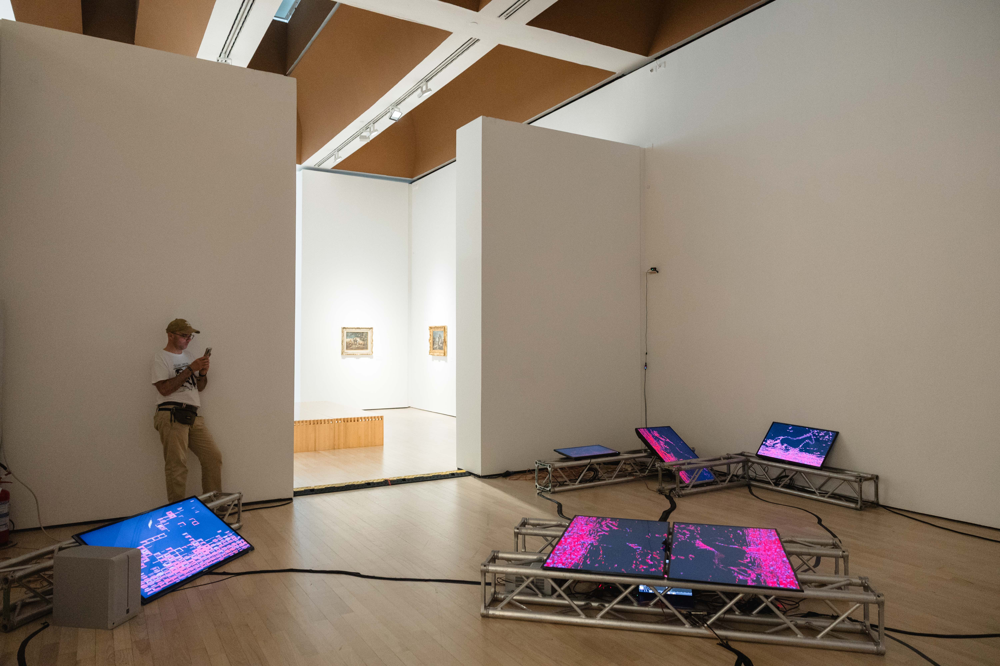
“Rebuild it with the materials of your time.”
— Giacomo Balla, found by Elio Marchigiani under a cardboard flower
The present is fed back into itself until the image no longer resembles what entered. Memory is not stored — it is metabolized.
Every position a body has occupied, held simultaneously. Past and present occupy the same surface.
Only the parts of the signal that move survive. The rest decays into blocks — data corruption as the truest portrait of flux.
The body reduced to the line where it ends and the world begins. That line accumulates, and persists after the body has moved on.
The same figure shown now and a few seconds ago, in the same frame. You are here, and you were here, and both are true at once.
In 1915, Giacomo Balla and Fortunato Depero published the Futurist Reconstruction of the Universe, calling for a new art: abstract and dynamic, transparent and luminous, autonomous, transformable, simultaneously plastic and alive.
States of Motion is a live audiovisual instrument that processes the present through feedback, temporal displacement, and signal degradation. A live camera enters the system and is acted upon immediately — accumulated, run back through itself, distributed across screens in space.
Your body is the input. The system does the rest.
Photo: @raw_sario / Rosario Multari — Poplar Utopia
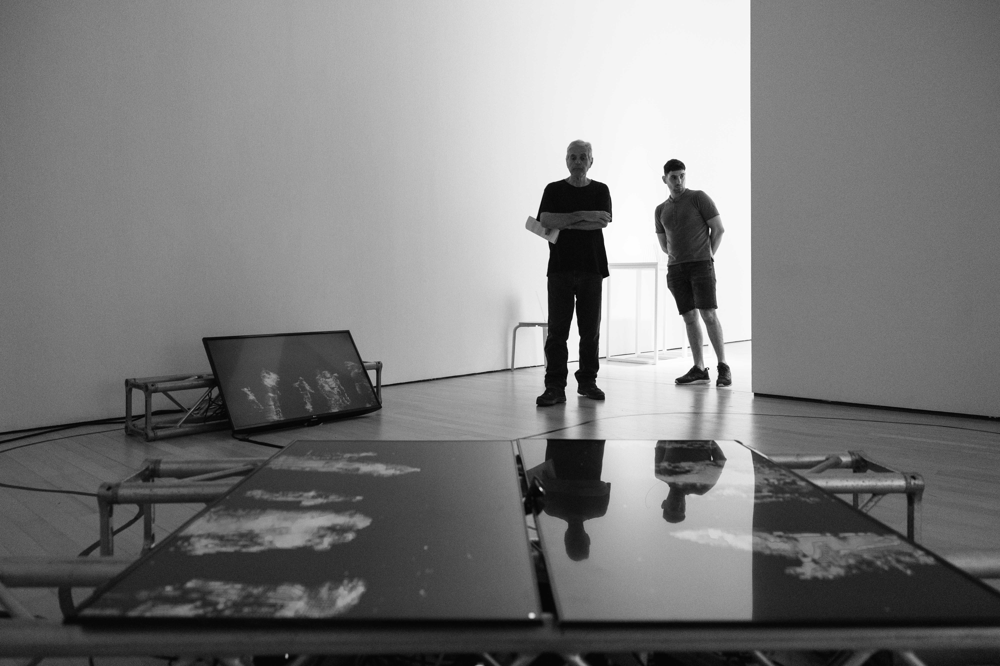

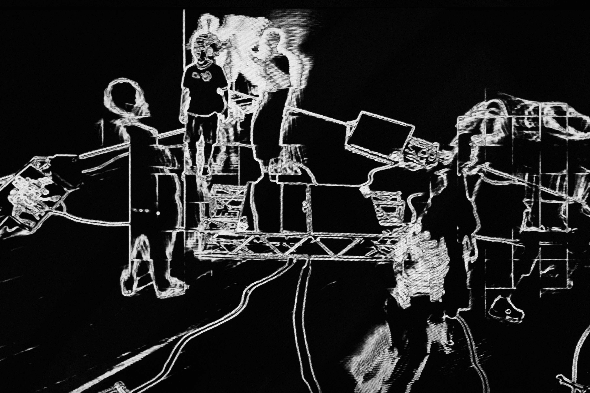
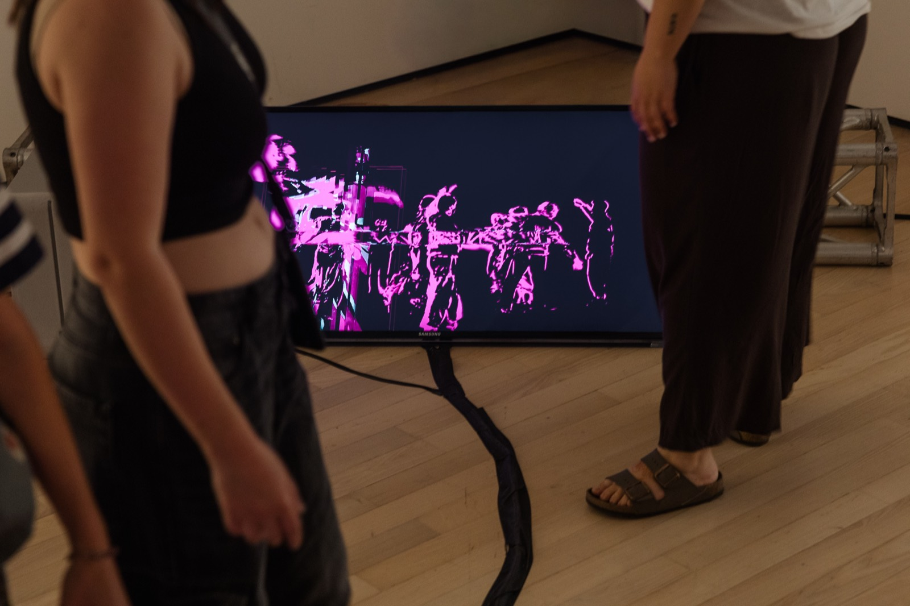
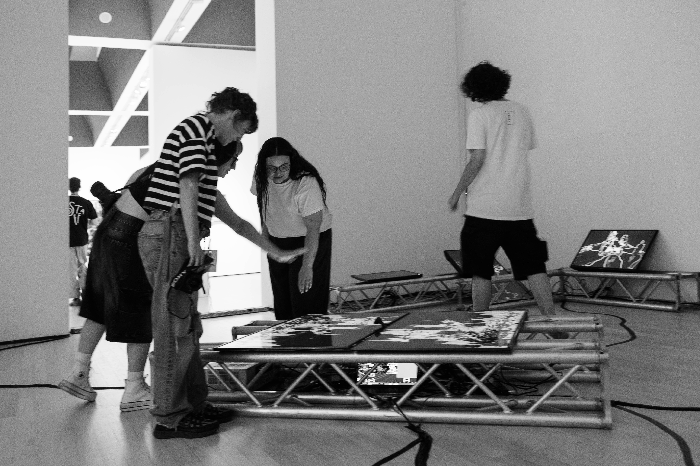
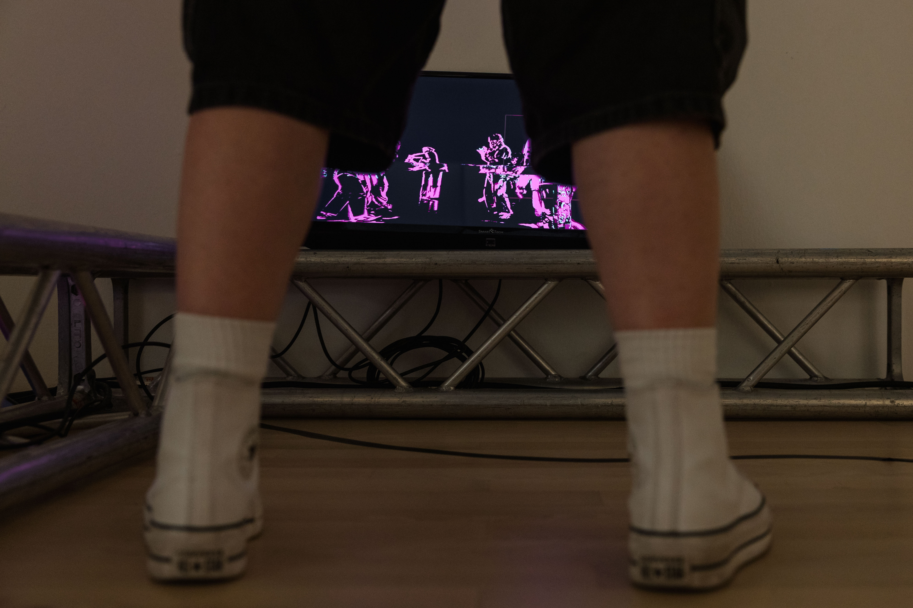
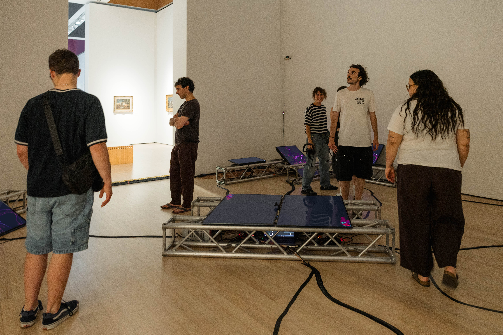


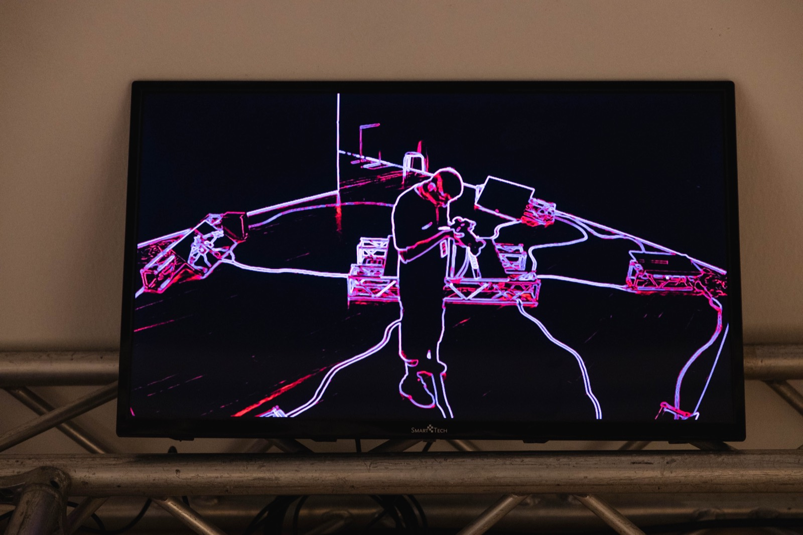
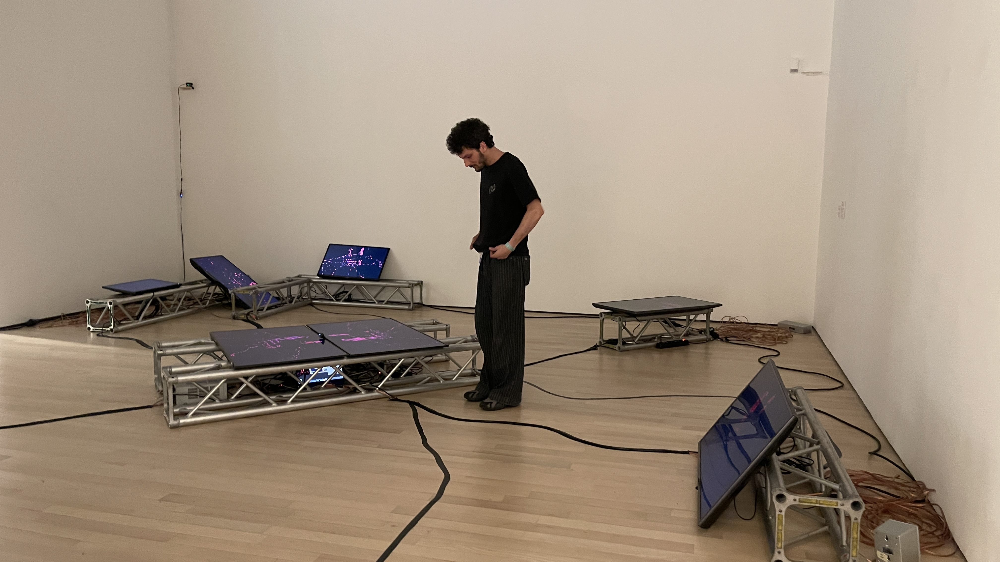
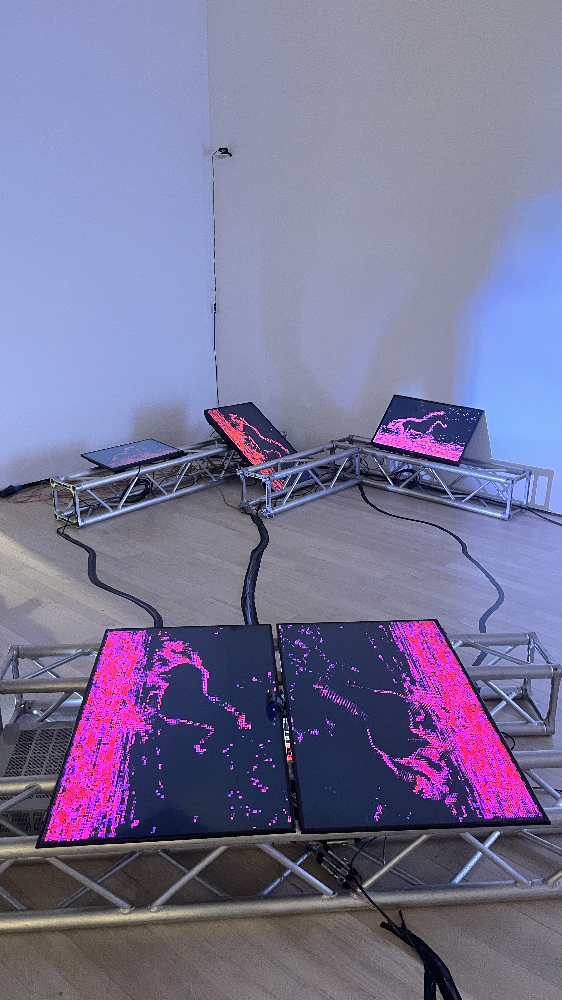

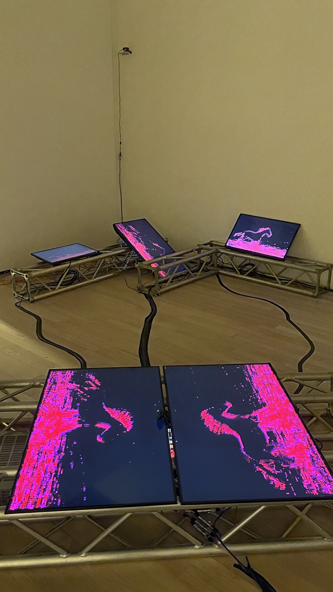
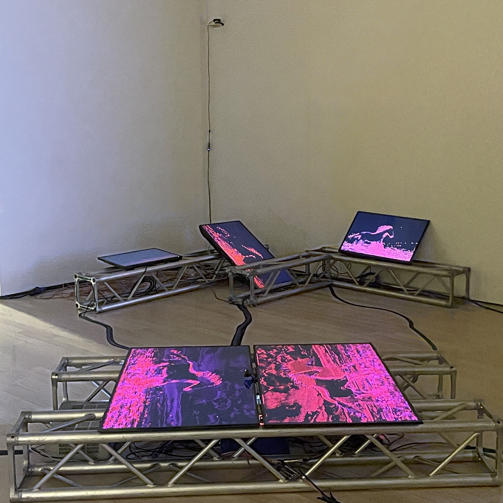

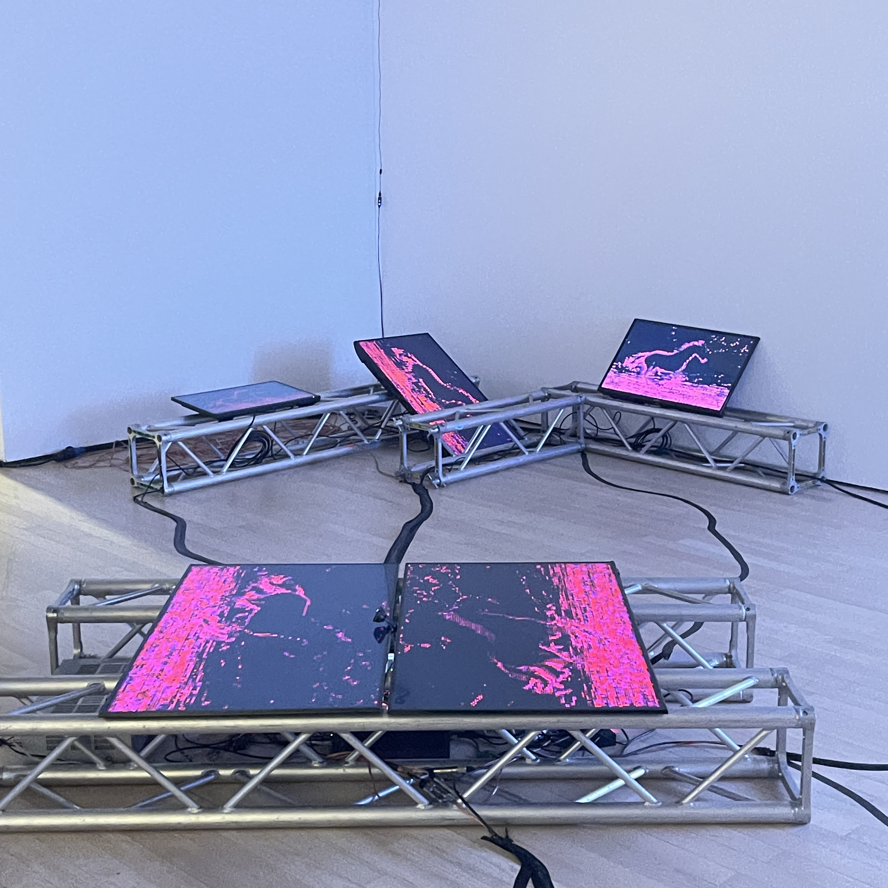